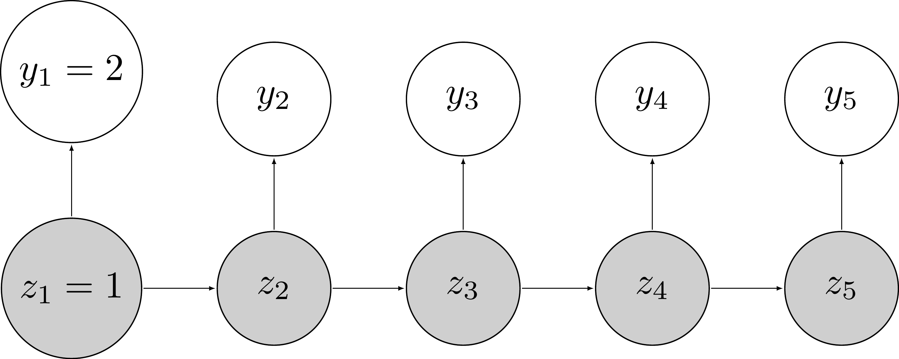
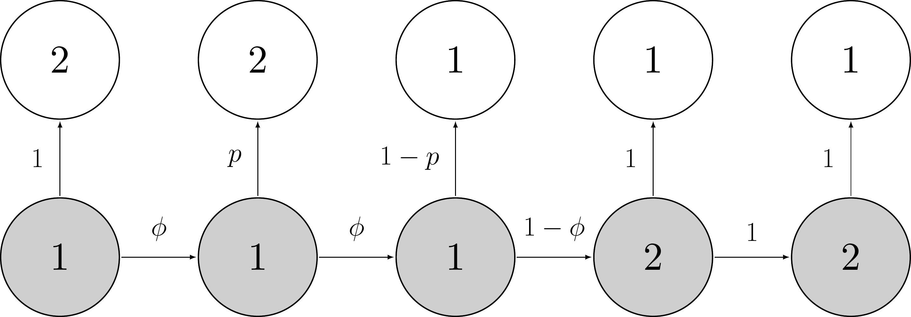

Unfortunately, the data with alive and dead states is the data we wish we had. In real life, animals cannot be monitored exhaustively, like humans in a medical trial. This is why we use capture-recapture protocols, in which animals are captured, individually marked, and released alive. Then, these animals may be detected again, or go undetected. Whenever animals go undetected, it might be that they were alive but missed, or because they were dead and therefore could not be detected. This issue is usually referred to as that of imperfect detection. As a consequence of imperfect detection, the Markov process for survival is only partially observed: You know an animal is alive when you detect it, but when an animal goes undetected, whether it is alive or dead is unknown to you. This is where hidden Markov models (HMMs) come in.
Let’s get back to the data we had in the previous section. The truth is in \(z\) which contains the fate of all individuals with \(z = 1\) for alive, and \(z = 2\) for dead:
## # A tibble: 57 × 6
## id `winter 1` `winter 2` `winter 3` `winter 4`
## <int> <int> <int> <int> <int>
## 1 1 1 1 1 1
## 2 2 1 1 1 1
## 3 3 1 1 1 1
## 4 4 1 1 1 1
## 5 5 1 1 1 1
## 6 6 1 1 2 2
## 7 7 1 1 1 1
## 8 8 1 2 2 2
## 9 9 1 1 1 1
## 10 10 1 2 2 2
## # ℹ 47 more rows
## # ℹ 1 more variable: `winter 5` <int>Unfortunately, we have only partial access to \(z\). What we do observe is \(y\) the detections and non-detections. How are \(z\) and \(y\) connected?
The easiest connection is with dead animals which go undetected for sure. Therefore when an animal is dead i.e. \(z = 2\), it cannot be detected, therefore \(y = 0\):
## # A tibble: 57 × 6
## id `winter 1` `winter 2` `winter 3` `winter 4`
## <int> <int> <int> <int> <int>
## 1 1 1 1 1 1
## 2 2 1 1 1 1
## 3 3 1 1 1 1
## 4 4 1 1 1 1
## 5 5 1 1 1 1
## 6 6 1 1 0 0
## 7 7 1 1 1 1
## 8 8 1 0 0 0
## 9 9 1 1 1 1
## 10 10 1 0 0 0
## # ℹ 47 more rows
## # ℹ 1 more variable: `winter 5` <int>Now alive animals may be detected or not. If an animal is alive \(z = 1\), it is detected \(y = 1\) with probability \(p\) or not \(y = 0\) with probability \(1-p\). In our example, first detection coincides with first winter for all individuals.
## # A tibble: 57 × 6
## id `winter 1` `winter 2` `winter 3` `winter 4`
## <int> <dbl> <dbl> <dbl> <dbl>
## 1 1 1 0 0 0
## 2 2 1 0 1 0
## 3 3 1 0 0 0
## 4 4 1 1 1 1
## 5 5 1 1 1 1
## 6 6 1 0 0 0
## 7 7 1 0 1 1
## 8 8 1 1 1 1
## 9 9 1 1 1 1
## 10 10 1 1 0 0
## # ℹ 47 more rows
## # ℹ 1 more variable: `winter 5` <dbl>Compare with the previous \(z\) table. Some 1’s for alive have become 0’s for non-detection, other 1’s for alive have remained 1’s for detection. This \(y\) table is what we observe in real life. I hope I have convinced you that to make the connection between observations, the \(y\), and true states, the \(z\), we need to describe how observations are made (or emitted in the HMM terminology) from the states.
The novelty in HMMs is the link between observations and states. This link is made through observation probabilities. For example, the probability of detecting an animal \(i\) at \(t\) given it is alive at \(t\) is \(\Pr(y_{i,t}=2|z_{i,t}=1)=\omega_{1,2}\). It is the detection probability \(p\). If individual \(i\) is dead at \(t\), then it is missed for sure, and \(\Pr(y_{i,t}=1|z_{i,t}=2)=\omega_{2,1}=1\).
We can gather these observation probabilities into an observation matrix \(\mathbf{\Omega}\). In rows we have the states alive \(z = 1\) and dead \(z = 2\), while in columns we have the observations non-detected \(y = 1\) and detected \(y = 2\) (previously coded 0 and 1 respectively):
\[\begin{align*} \mathbf{\Omega} = \left(\begin{array}{cc} \omega_{1,1} & \omega_{1,2}\\ \omega_{2,1} & \omega_{2,2} \end{array}\right) = \left(\begin{array}{cc} 1 - p & p\\ 1 & 0 \end{array}\right) \end{align*}\]
In survival models we will use throughout this book, we condition the fate of individuals on first detection, which boils down to set the corresponding detection probability to 1.
The observation matrix is:
\[\begin{matrix} & \\ \mathbf{\Omega} = \left ( \vphantom{ \begin{matrix} 12 \\ 12 \end{matrix} } \right . \end{matrix} \hspace{-1.2em} \begin{matrix} y_t=1 & y_t=2 \\ \mbox{(non-detected)} & \mbox{(detected)} \\ \hdashline 1 - p & p\\ 1 & 0\\ \end{matrix} \hspace{-0.2em} \begin{matrix} & \\ \left . \vphantom{ \begin{matrix} 12 \\ 12 \end{matrix} } \right ) \begin{matrix} z_{t}=1 \; \mbox{(alive)}\\ z_{t}=2 \; \mbox{(dead)} \end{matrix} \end{matrix}\]
Our hidden Markov model can be represented this way:

States \(z\) are in gray. Observations \(y\) are in white. All individuals are first captured in the first winter \(t = 1\), and are therefore all alive \(z_1 = 1\) and detected \(y_1 = 2\).
A hidden Markov model is just two time series running in parallel. One for the states with the Markovian property, and the other of for the observations generated from the states. HMM are a special case of state-space models in which latent states are discrete.
Have a look to the example below, in which an individual is detected at first sampling occasion, detected again, then missed for the rest of the study. While on occasion \(t=3\) that individual was alive \(z_3=1\) and went undetected \(y_3=1\), on occasions \(t=4\) and \(t=5\) it went undetected \(y_4=y_5=1\) because it was dead \(z_4=z_5=2\). Because we condition on first detection, the link between state and observation at \(t=1\) is deterministic and \(p = 1\).

In the Bayesian framework, we usually work with the so-called complete likelihood, that is the probability of the observed data \(y\) and the latent states \(z\) given the parameters of our model, here the survival and detection probabilities \(\phi\) and \(p\). The complete likelihood for individual \(i\) is:
\[\begin{align*} \Pr(\mathbf{y}_i, \mathbf{z}_i) &= \Pr(y_{i,1}, y_{i,2}, \ldots, y_{i,T}, z_{i,1}, z_{i,2}, \ldots, z_{i,T})\\ \end{align*}\]
Using the definition of a conditional probability, we have:
\[\begin{align*} \Pr(\mathbf{y}_i, \mathbf{z}_i) &= \Pr(y_{i,1}, y_{i,2}, \ldots, y_{i,T}, z_{i,1}, z_{i,2}, \ldots, z_{i,T})\\ &= \color{blue}{\Pr(y_{i,1}, y_{i,2}, \ldots, y_{i,T} | z_{i,1}, z_{i,2}, \ldots, z_{i,T}) \Pr(z_{i,1}, z_{i,2}, \ldots, z_{i,T})}\\ \end{align*}\]
Then by using the independence of the \(y\) conditional on the \(z\), and the likelihood of a Markov chain, we get that:
\[\begin{align*} \Pr(\mathbf{y}_i, \mathbf{z}_i) &= \Pr(y_{i,1}, y_{i,2}, \ldots, y_{i,T}, z_{i,1}, z_{i,2}, \ldots, z_{i,T})\\ &= \Pr(y_{i,1}, y_{i,2}, \ldots, y_{i,T} | z_{i,1}, z_{i,2}, \ldots, z_{i,T}) \Pr(z_{i,1}, z_{i,2}, \ldots, z_{i,T})\\ &= \color{blue}{\left(\prod_{t=1}^T{\Pr{(y_{i,t} | z_{i,t})}}\right) \left(\Pr(z_{i,1}) \prod_{t=2}^T{\Pr{(z_{i,t} | z_{i,t-1})}}\right)}\\ \end{align*}\]
Finally, by recognizing the observation and transition probabilities, we have that the complete likelihood for individual \(i\) is:
\[\begin{align*} \Pr(\mathbf{y}_i, \mathbf{z}_i) &= \Pr(y_{i,1}, y_{i,2}, \ldots, y_{i,T}, z_{i,1}, z_{i,2}, \ldots, z_{i,T})\\ &= \Pr(y_{i,1}, y_{i,2}, \ldots, y_{i,T} | z_{i,1}, z_{i,2}, \ldots, z_{i,T}) \Pr(z_{i,1}, z_{i,2}, \ldots, z_{i,T})\\ &= \color{blue}{\left(\prod_{t=1}^T{\omega_{z_{i,t}, y_{i,t}}}\right) \left(\Pr(z_{i,1}) \prod_{t=2}^T{\gamma_{z_{i,t-1},z_{i,t}}}\right)}\\ \end{align*}\]
To obtain the complete likelihood of the whole dataset, we need to multiply this individual likelihood for each animal \(\displaystyle{\prod_{i=1}^N{\Pr(\mathbf{y}_i,\mathbf{z}_i)}}\). When several individuals have the same contribution, calculating their individual contribution only once can greatly reduce the computational burden, as illustrated in Section 1.9.
The Bayesian approach with MCMC methods allows treating the latent states \(z_{i,t}\) as if they were parameters, and to be estimated as such. However, the likelihood is rather complex with a large number of latent states \(z_{i,t}\), which comes with computational costs and slow mixing. There are situations where the latent states are the focus of ecological inference and need to be estimated (see Suggested reading below). However, if not needed, you might want to get rid of the latent states and rely on the so-called marginal likelihood. By doing so, you can avoid sampling the latent states, focus on the ecological parameters, and often speeds up computations and improves mixing as shown in Section 1.8. Actually, you can even estimate the latent states afterwards, as illustrated in Section 1.10.